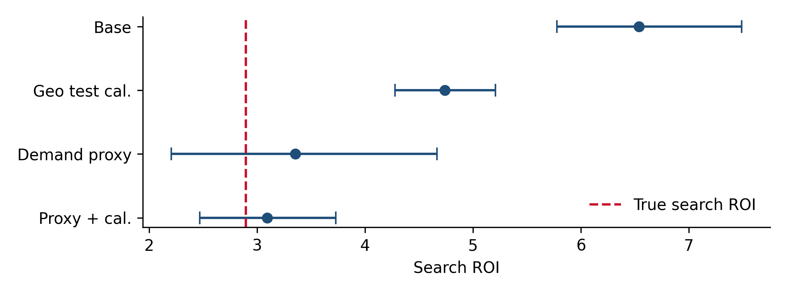

Chapter 11 Validating and calibrating MMM
Whether an MMM’s channel estimates can be trusted for budget decisions, which checks actually catch the errors that matter, and how to use experiments to correct the model where it is wrong.
11.1 What validation has to catch
Chapters 9 and 10 showed two kinds of error in the same dataset. Display was unidentified: the data said nothing about it, and the classical model produced nonsense while the Bayesian one returned its prior. Search was confounded: its spend follows demand, and both models credited it with that demand, precisely and wrongly.
A validation procedure is only useful if it can catch both. The table below lists the common checks and what each can and cannot detect.
| Check | Catches | Does not catch |
|---|---|---|
| In-sample fit (R², MAPE, posterior predictive) | Gross misspecification | Wrong decomposition; confounding |
| Out-of-sample forecast | Overfitting; unstable base | Wrong decomposition; confounding |
| Stability across refits and windows | Unidentified channels (estimates jump) | Stable confounding |
| Prior sensitivity | Prior-driven channels | Confounding |
| Parameter recovery on simulated data | Method that cannot recover truth even in principle | Problems specific to your real data |
| Business sense checks (base share, ROI ranges) | Absurd results | Plausible but wrong results |
| Agreement with experiments | Confounding and bias of all kinds | Only covers channels and periods that were tested |
Only the last row catches confounding. Everything else is useful, but none of it can tell you that a precise, stable, plausible, well-fitting estimate is biased.
11.2 Out-of-sample forecasts and stability
A common first check is to refit the model on a shorter history and forecast the following quarter. We do this for the classical model from Chapter 9, at four cut-off points, and record both the forecast error and each channel’s estimated ROI.
import sys; sys.path.insert(0, ".")
import warnings; warnings.filterwarnings("ignore")
import numpy as np, pandas as pd
from pms_sim import simulate, CHANNELS
from pms_classical import fit_classical
df, truth = simulate()
X, y, promo = df[CHANNELS].to_numpy(), df["revenue"].to_numpy(), df["promo"].to_numpy()
rows = []
for end in [104, 117, 130, 143]:
_, _, predict = fit_classical(X[:end], y[:end], promo[:end])
yhat, contrib = predict(X[:end + 13], promo[:end + 13])
rows.append({"fit on weeks": f"1-{end}",
"next-13-week MAPE": f"{np.mean(np.abs(y[end:end+13] / yhat[end:end+13] - 1)):.1%}",
**{c: round(contrib[:end, i].sum() / X[:end, i].sum(), 2) for i, c in enumerate(CHANNELS)}})
out = pd.DataFrame(rows).set_index("fit on weeks")
out.loc["truth"] = ["", *[round(truth["roi"][c], 2) for c in CHANNELS]]
print(out.to_string())## next-13-week MAPE tv social search display
## fit on weeks
## 1-104 2.0% 2.20 1.44 6.58 29.61
## 1-117 1.5% 2.25 1.45 6.88 41.00
## 1-130 1.9% 2.21 1.32 7.39 24.86
## 1-143 1.4% 2.26 1.51 7.35 16.36
## truth 2.43 2.04 2.89 0.68The out-of-sample forecasts are excellent in every window, around 2% error. On that basis alone, the model would pass most validation reviews. The stability check is more revealing: display’s ROI jumps around wildly between windows, which correctly flags it as unidentified. Search, however, is perfectly stable at more than twice its true value. Stability catches unidentified channels; it does not catch confounded ones, because confounding is a stable feature of the data.
11.3 Calibrating with experiments
Suppose a geo test on search ran for 12 weeks (weeks 121 to 132) and measured an ROI of 2.83 with a standard error of 0.4 over that window, on backend revenue. That is exactly the kind of evidence that can correct a confounded channel.
There are two common ways to bring it into a Bayesian MMM:
- As a prior on the channel’s ROI. Simple, and the approach Meridian is built around. The weakness is that the experiment measured the ROI in one window at one spend level, while the prior applies to the whole period.
- As an extra likelihood term. The model computes the ROI it implies for the test window and spend level, and that implied value is compared with the measurement. This is how PyMC-Marketing’s lift-test calibration works, and it is what
build_mmmdoes when given aliftargument (the last block of the model code in Chapter 10).
lift = {"channel": "search", "start": 120, "end": 132, "roi": 2.83, "se": 0.4}
model, _ = build_mmm(df, CHANNELS, lift=lift)A second, independent fix targets the cause rather than the symptom. Search is confounded because its spend responds to demand the model cannot see. If an observable proxy for that demand exists, adding it as a control blocks the confounding path (Chapter 3). Here we use a category-level demand index, such as category search interest from a trends tool. The choice of proxy matters: branded search volume would be a bad control, because our own media drive it, which makes it a mediator rather than a confounder.
We fitted four versions of the model: the base model, the model calibrated with the geo test, the model with the demand proxy, and the model with both.
import arviz as az
names = {"base": "Base", "calibrated": "Geo test cal.",
"proxy": "Demand proxy", "proxy_calibrated": "Proxy + cal."}
roi = {k: az.from_netcdf(f"_cache/mmm_{k}.nc").posterior["roi"].stack(s=("chain", "draw")).values
for k in names}
tab = pd.DataFrame({names[k]: [f"{np.median(r[i]):.2f} [{np.quantile(r[i], .05):.2f}, {np.quantile(r[i], .95):.2f}]"
for i in range(4)] for k, r in roi.items()}, index=CHANNELS)
tab["truth"] = [round(truth["roi"][c], 2) for c in CHANNELS]
print("ROI, posterior median [90% interval]:\n" + tab.to_string())## ROI, posterior median [90% interval]:
## Base Geo test cal. Demand proxy Proxy + cal. truth
## tv 2.27 [2.18, 2.36] 2.24 [2.15, 2.34] 2.30 [2.23, 2.37] 2.30 [2.23, 2.38] 2.43
## social 1.52 [0.76, 2.60] 1.78 [0.88, 3.00] 1.68 [0.99, 2.60] 1.71 [1.01, 2.66] 2.04
## search 6.54 [5.78, 7.49] 4.74 [4.28, 5.21] 3.36 [2.20, 4.67] 3.09 [2.47, 3.73] 2.89
## display 1.04 [0.08, 3.39] 1.23 [0.10, 3.73] 1.07 [0.11, 3.35] 1.07 [0.09, 3.26] 0.68import matplotlib.pyplot as plt
i = CHANNELS.index("search")
fig, ax = plt.subplots(figsize=(7, 2.6))
yy = np.arange(4)[::-1]
for y_, (k, r) in zip(yy, roi.items()):
lo, med, hi = np.quantile(r[i], [0.05, 0.5, 0.95])
ax.errorbar(med, y_, xerr=[[med - lo], [hi - med]], fmt="o", capsize=4, color="#1F4E79")
ax.axvline(truth["roi"]["search"], ls="--", color="#C8102E", label="True search ROI")
ax.set_yticks(yy, list(names.values())); ax.set_xlabel("Search ROI"); ax.legend(loc="lower right")
plt.tight_layout()
plt.show()
Figure 11.1: Search ROI under four model specifications (median and 90% interval) against the truth (dashed).
11.4 What calibration did and did not do
Calibration alone helped, but not enough. The geo test pulled search from about 6.5 to under 5, a large correction, yet the interval still excludes the truth. The reason is instructive. The experiment constrains what the model says about weeks 121 to 132. In the other 144 weeks, nothing has changed: search spend still moves with unobserved demand, and the model can still credit it with that demand. It reconciles the two by fitting the test window as well as it can while keeping search high elsewhere. A single short experiment cannot overrule three years of confounded variation.
The demand proxy addressed the cause. With a control for category demand, the search estimate falls to the right neighborhood and the interval widens to an honest width that contains the truth. Blocking the confounding path is more powerful than correcting the estimate after the fact.
Both together were best. The proxy removes most of the bias, and the experiment then sharpens the estimate. The result is close to the truth with a usefully narrow interval.
Display remains unmeasured in every version. No amount of modeling fixes a channel with no variation. It needs its own experiment.
Two practical conclusions follow. First, treat calibration as part of model building, not as a patch: when an experiment and the model disagree strongly, ask why the model is wrong, and fix the specification if you can, rather than only adding the experiment as a constraint. Second, one experiment per channel is a starting point. Repeated tests across seasons and spend levels constrain the model in more places and leave it less room to hide bias outside the test windows.
Calibrating an MMM to platform-attributed results, or to lift studies that measured a different outcome. Calibration transfers whatever the experiment measured into the model. If the experiment measured pixel conversions in another market, the model is now calibrated to that.
11.5 Calibrating well
- Match the conditions. Use the experiment’s window, spend level, market and outcome definition. A likelihood term on the test window does this naturally; an ROI prior on the whole period does not.
- Inflate uncertainty for transport. If conditions differ (different season, spend level or market), widen the experiment’s standard error to reflect the gap, as in the bias allowances of Chapter 14.
- Prefer go-dark and scale-back tests for the channels the model is least sure about, and heavy-up tests where the decision is about growth, so that the calibration covers the part of the response curve the decision depends on.
- Keep a log of every experiment used for calibration, with its conditions, so that the model’s evidence base is auditable.
11.6 Other validation worth doing
Parameter recovery on simulated data. Everything in this part of the book is an example of it: simulate data with known truth that resembles your real situation (spend patterns, correlations, noise) and check whether the model recovers the truth. If it cannot recover known effects in simulation, it will not recover unknown ones in reality. Meta’s siMMMulator automates this.
Prior sensitivity. Refit with meaningfully different reasonable priors. Channels whose estimates move a lot are prior-driven, which should be stated in any readout.
Business sense checks. Base share of the outcome, ROIs against benchmarks from your own past experiments, and the implied effect of switching a channel off should all be plausible to someone who knows the business. Implausible results usually mean a missing control.
11.7 Checklist
- Has the model been refit on several windows, and are unstable channels flagged as unidentified?
- Is every channel’s estimate compared with an experiment where one exists?
- For channels whose spend responds to demand, is there a demand proxy that is a confounder (category level) rather than a mediator (brand level)?
- Are experiments used for calibration matched to the model’s outcome, market and spend level, with uncertainty inflated where they are not?
- Has parameter recovery been checked on data simulated to resemble the real situation?
- Is there an experiment plan for channels that remain unidentified?
11.8 Further reading
- Calibration with experiments (Juan Orduz) and the PyMC-Marketing lift-test calibration notebook.
- mmm-eval (Mutinex). An open-source framework for evaluating MMMs.
- siMMMulator (Meta) for simulating data with known truth.
- Estimating the long-term base in MMM (Niall Oulton) for the separation of base and media over longer horizons.
Full links are in Appendix A.